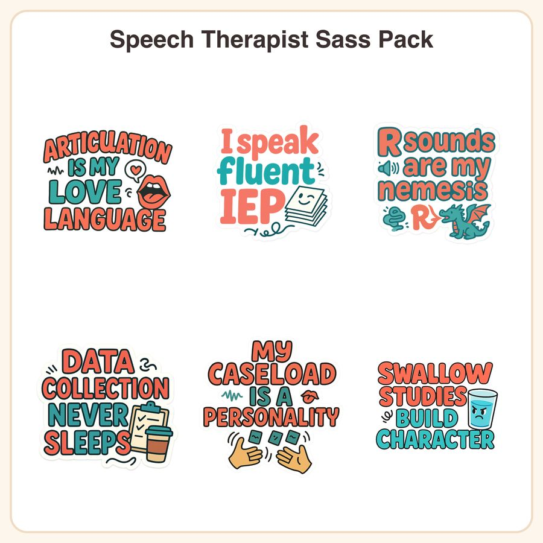

$4.99
Buy nowView on EtsyHook: Finally, stickers that get your jargon-filled, articulation-obsessed, IEP-writing life! This bold coral & teal sticker pack was made for SLPs who juggle caseloads, data sheets, and R-sound battles with a sense of humor. What's included (6 designs): • Articulation is my love language – cartoon mouth mid-sound with heart bubble • I speak fluent IEP – paperwork stack with a wink face • R sounds are my nemesis – tiny dragon breathing an R-shaped flame • Data collection never sleeps – clipboard, coffee cup, checkmarks • My caseload is a personality – juggling hands with tiny flashcards • Swallow studies build character – determined cartoon water glass File formats & sizes: • 6 individual transparent PNG files, 1024x1024px, 300dpi • 1 printable sticker sheet (PDF, US Letter 8.5x11in) with all designs arranged for easy cutting • Zipped folder for instant download How to use: Print the sticker sheet at home or a print shop on sticker paper, cut out, and enjoy. Use the individual PNGs for planners, digital planning apps (GoodNotes, Notability), water bottles, laptop decals, or print-on-demand small-batch products. License: Personal use and small-business commercial use up to 500 units are welcome. Please don't resell, redistribute, or share the digital files themselves. Honest note: These designs were created by our shop with the help of AI tools, then hand-refined for color, line, and character. Questions before you buy? Just message us — happy to help!